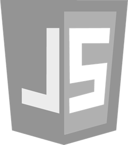
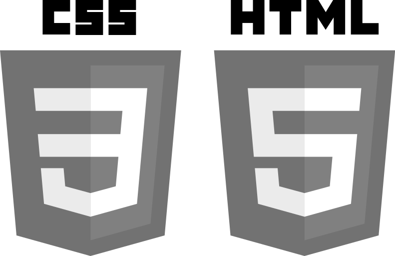
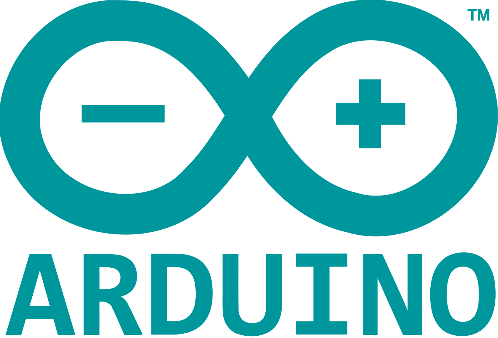

Rust
Rust is the primary language behind my current project. This is a
medical messaging parser that converts HL7 messages into SQL. This project uses SQLite as a backend,
where it is used to label extracted data, and then store that labeled data.
This project is not public, but if you would like to learn more, reach out!

Python
Python was the first language that I really enjoyed.
It's abstractions, combined with its great ecosystem, made it the perfect language for me when I first started
to learn programming. Since then, I have used Python in a variety of research and professional settings.


JavaScript and TypeScript
I use JS and TS everyday in my current position. Primarily, I use JS to handle big data within the healthcare space.
JS is great because of its unmatched web-development ecosystem. I have used JS within a variety of frameworks/libraries,
where I mostly use Angular.

ObjectScript
ObjectScript is an enterprise language that I often use at work.
ObjectScript is a language built on top of InterSystem's Cache. I primarily use this language
for heavy back-end tasks (Chunking, filtering, normalizing)

SQL
I use SQL in a variety of settings. My go to database for personal projects
is SQLite, but I have experience using SQL in a variety of settings. My new position puts a heavy
focus on writing more complicated SQL statements.


CSS and HTML
I think that using HTML and CSS can be pretty fun. I created this entire website
using basic html and css.

XSLT
One of the primary ways of sending medical data is a CCD. This is a XML
based record providing information on a medical event. Many hospitals use slightly
different schemas for their CCDs. XSLT is great for normalizing this data.

Java
Java was the language I used in college. Using Java,
I learned the basics of object-oriented programming, data structures
and algorithms.


Arduino
One of my main nerd-hobbies is tinkering with electronics. Ardiuno, the language
ubiquitous with electronic tinkering, is pretty close syntatically to C or C++.
Lately I have been playing around with ESP8266 and an STM32-F3